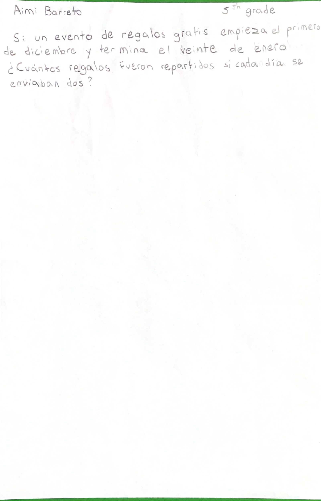
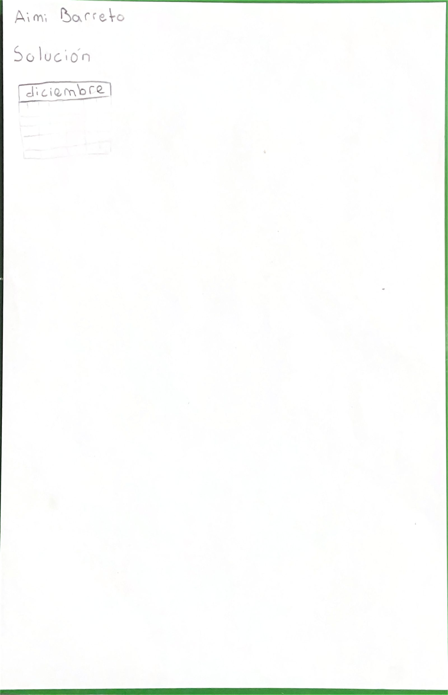

5.º grado
Katherine Aimi B.
Katherine cuenta cómo se le ocurrió

Ver cómo se resuelve

Pieza 5-06 · Open House 2026 · Albert Einstein School
5.º grado
Katherine cuenta cómo se le ocurrió


Pieza 5-06 · Open House 2026 · Albert Einstein School